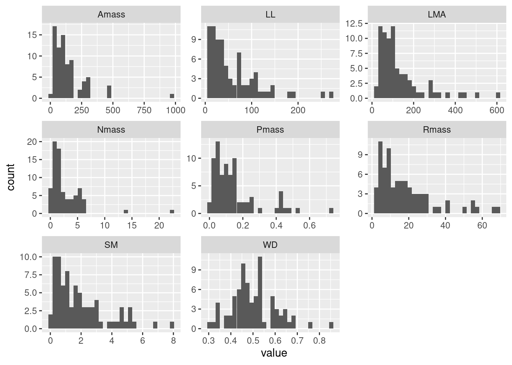
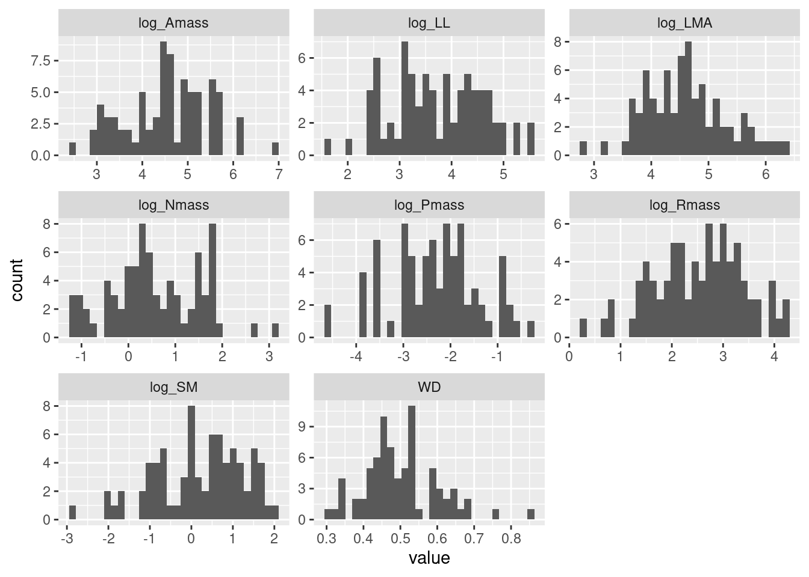
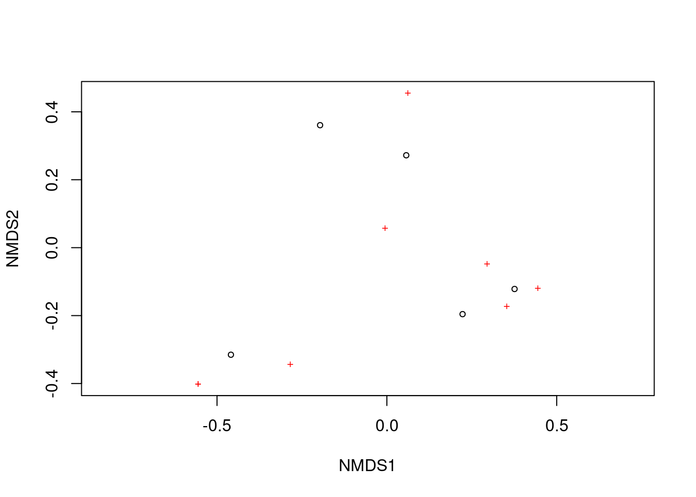
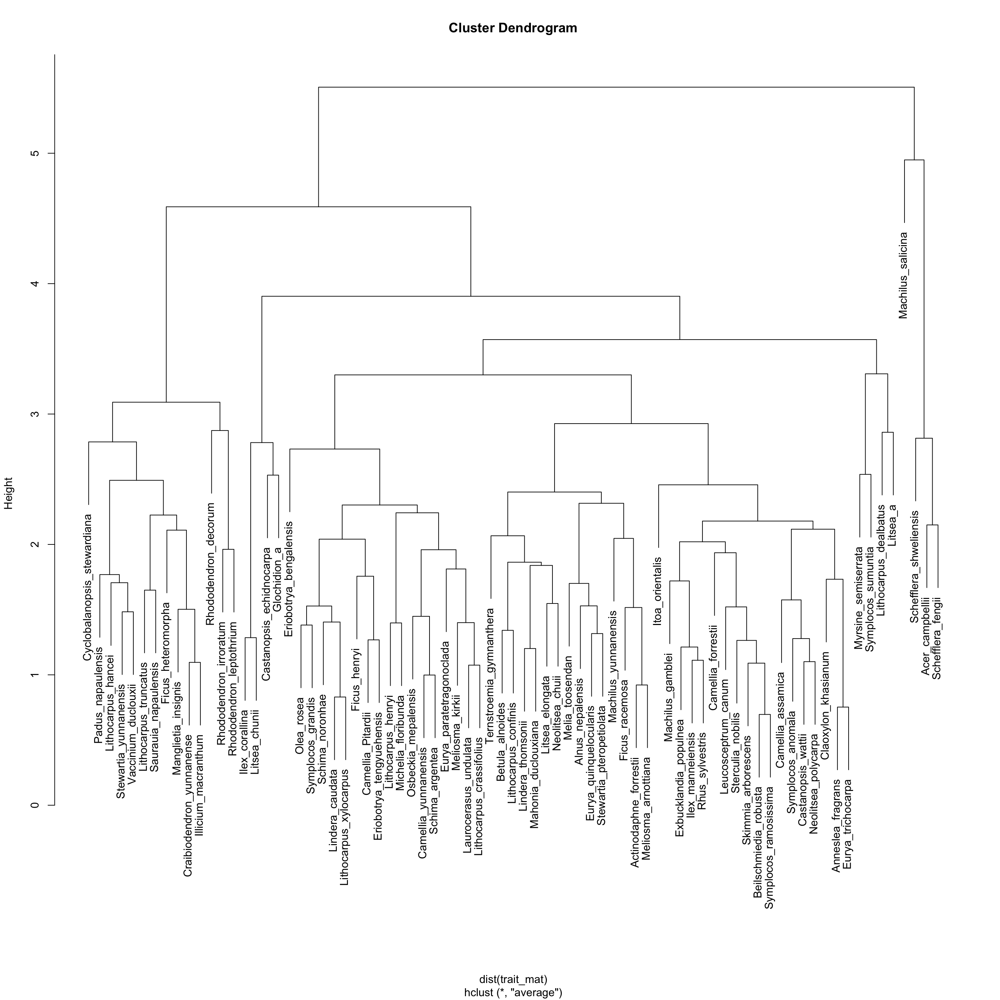
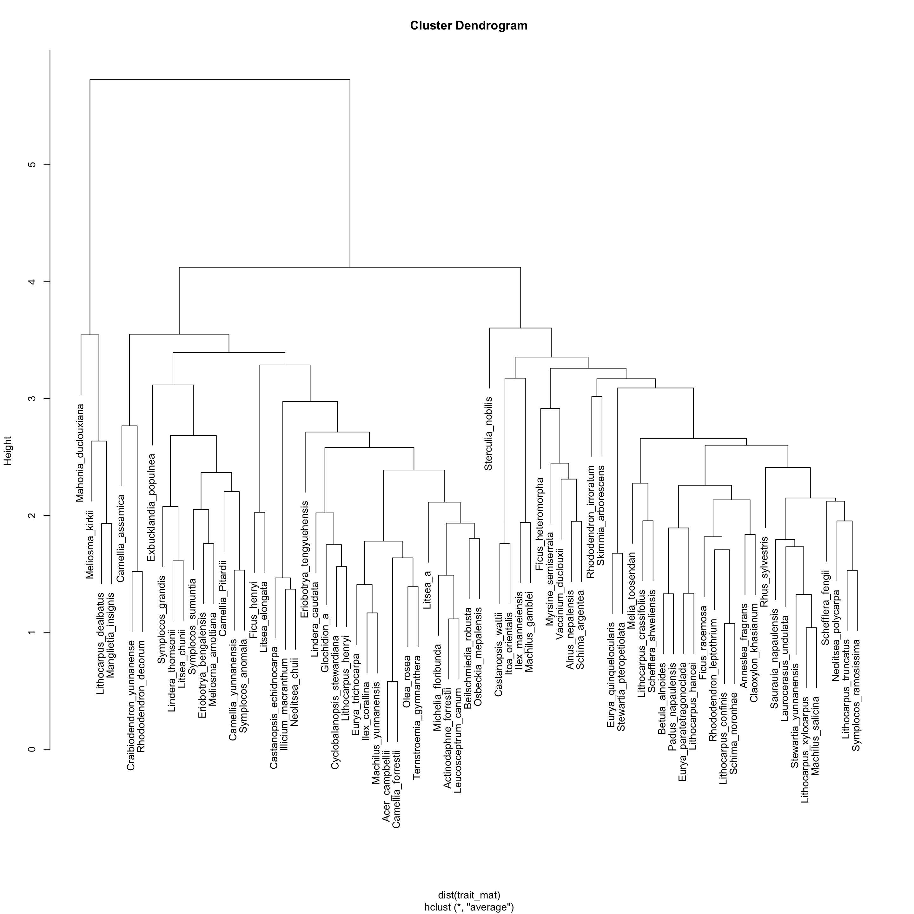

git clone https://github.com/mattocci27/phy-fun-div.gitDiversity calculation
Course materials for AFEC 2025 at XTBG.
1 Objectives
- Prepare species \(\times\) site matrices and trait data from csv files.
- Calculate diversity indices.
2 Prerequisites
You can work through these exercises with a standard R installation; just grab the files and install a few packages.
Clone the repository (or download and unzip it):
(Optional) Restore the environment with
renv. This ensures identical package versions but takes longer the first time.renv::restore()Prefer a quicker start? Install the required packages manually:
install.packages(c( "tidyverse", "picante", "FD", "DT", "here", "vegan", "ape" ))
If you want to skip renv, comment out the autoload lines in .Rprofile.
# Sys.setenv(RENV_DOWNLOAD_METHOD = "curl")
# Sys.setenv(RENV_CONFIG_PAK_ENABLED = "TRUE")
# options(renv.install.staged = FALSE)
# if (file.exists("renv/activate.R")) {
# source("renv/activate.R")
# if ("renv" %in% loadedNamespaces()) {
# renv::settings$use.cache(TRUE)
# }
# }3 Load packages
library(tidyverse)
library(picante)
library(FD)4 Data
4.1 Community
First, we import the community data.
d <- read_csv("data/samp.csv")4.1.1 Using a relative path
- I prefer
read_csvbutread.csvis fine too. - Our working directory is
phy-fun-div, and the relative path tosamp.csvisdata/samp.csv.
The directory structure looks like this:
.
├── data/
│ ├── dummy_trait.csv
│ ├── dummy_tree.newick
│ ├── samp.csv
│ └── soil.csv4.1.2 Using here package
We can also use here package to specify the absolute path to the file. This is useful when you are working in a sub-directory. For example, you might be in docs/ directory, because your qmd file is there, but here will help you to find the correct absolute path to the data file.
# (For demonstration only — normally you shouldn't change working directories)
setwd("docs")
getwd()[1] "/Users/mattocci/Dropbox/5-Tools/ghq/github.com/mattocci27/phy-fun-div/docs"read_csv("data/samp.csv")Error: 'data/samp.csv' does not exist in current working directory ('/Users/mattocci/Dropbox/5-Tools/ghq/github.com/mattocci27/phy-fun-div/docs').here::here("data/samp.csv")[1] "/Users/mattocci/Dropbox/5-Tools/ghq/github.com/mattocci27/phy-fun-div/data/samp.csv"d <- read_csv(here::here("data/samp.csv"))
setwd("..")4.1.3 Avoiding absolute paths
Avoid using absolute paths like this:
d <- read_csv("/Users/mattocci/Dropbox/5-Tools/ghq/github.com/mattocci27/phy-fun-div/data/samp.csv")Absolute paths are different on different computers (lack of reproducibility). It is also uncomfortable to make file system structure public (security risk).
4.1.4 Community data
Now let’s look at the community data.
d# A tibble: 40 × 3
Site Species abund
<chr> <chr> <dbl>
1 Site1 Illicium_macranthum 1
2 Site1 Manglietia_insignis 0
3 Site1 Michelia_floribunda 0
4 Site1 Beilschmiedia_robusta 0
5 Site1 Neolitsea_chuii 0
6 Site1 Lindera_thomsonii 0
7 Site1 Actinodaphne_forrestii 0
8 Site1 Machilus_yunnanensis 0
9 Site2 Illicium_macranthum 1
10 Site2 Manglietia_insignis 2
# ℹ 30 more rowsDT::datatable(d)Then, we want to make a species \(\times\) site matrix. tapply is a useful function here.
tapply(d$abund, d$Species, sum)Actinodaphne_forrestii Beilschmiedia_robusta Illicium_macranthum
4 2 5
Lindera_thomsonii Machilus_yunnanensis Manglietia_insignis
5 2 3
Michelia_floribunda Neolitsea_chuii
2 1 samp <- tapply(d$abund, list(d$Site, d$Species), sum)
samp Actinodaphne_forrestii Beilschmiedia_robusta Illicium_macranthum
Site1 0 0 1
Site2 0 2 1
Site3 2 0 1
Site4 2 0 1
Site5 0 0 1
Lindera_thomsonii Machilus_yunnanensis Manglietia_insignis
Site1 0 0 0
Site2 0 0 2
Site3 2 2 0
Site4 2 0 1
Site5 1 0 0
Michelia_floribunda Neolitsea_chuii
Site1 0 0
Site2 2 0
Site3 0 0
Site4 0 0
Site5 0 1class(samp)[1] "matrix" "array" 4.2 Phylogeny
phylo <- read.tree("data/dummy_tree.newick")
plot(phylo)
4.3 Traits
| Abbreviation | Trait | Unit |
|---|---|---|
| LMA | Leaf mass per area | g m-2 |
| LL | Leaf lifespans (longevity) | months |
| Amass | Maximum photosynthetic rates per unit mass | nnoml g-1 s-1 |
| Rmass | Dark respiration rates per unit mass | nnoml g-1 s-1 |
| Nmass | Leaf nitrogen per unit mass | % |
| Pmass | Leaf phosphorus per unit mass | % |
| WD | Wood density | g cm-3 |
| SM | Seed dry mass | mg |
trait <- read_csv("data/dummy_trait.csv")
DT::datatable(trait)4.4 Check how traits look like first
trait_long <- trait |>
pivot_longer(lma:sm, names_to = "trait")
trait_long# A tibble: 616 × 3
sp trait value
<chr> <chr> <dbl>
1 Acer_campbellii lma 145.
2 Acer_campbellii ll 2.17
3 Acer_campbellii a_mass 70.3
4 Acer_campbellii r_mass 5.35
5 Acer_campbellii n_mass 1.48
6 Acer_campbellii p_mass 0.09
7 Acer_campbellii wd 0.68
8 Acer_campbellii sm 0.87
9 Actinodaphne_forrestii lma 49.0
10 Actinodaphne_forrestii ll 2.59
# ℹ 606 more rowsggplot(trait_long, aes(x = value)) +
geom_histogram(position = "identity") +
facet_wrap(~ trait, scale = "free") +
theme_bw()
Probably we can do log-transformation for all the traits except for WD.
trait2 <- trait |>
mutate(
across(c(lma, ll, a_mass, r_mass, n_mass, p_mass, sm),
~ log(.),
.names = "log_{.col}")) |>
dplyr::select(sp, log_lma, log_ll, log_a_mass, log_r_mass, log_n_mass, log_p_mass, wd, log_sm)
trait2 |>
mutate(across(where(is.numeric), ~ round(., 2))) |>
DT::datatable()trait2 |>
pivot_longer(log_lma:log_sm, names_to = "trait") |>
ggplot(aes(x = value)) +
geom_histogram(position = "identity") +
facet_wrap(~ trait, scale = "free") +
theme_bw()
5 First-order metrics (without phylogeny or traits)
5.1 Species richness
samp > 0 Actinodaphne_forrestii Beilschmiedia_robusta Illicium_macranthum
Site1 FALSE FALSE TRUE
Site2 FALSE TRUE TRUE
Site3 TRUE FALSE TRUE
Site4 TRUE FALSE TRUE
Site5 FALSE FALSE TRUE
Lindera_thomsonii Machilus_yunnanensis Manglietia_insignis
Site1 FALSE FALSE FALSE
Site2 FALSE FALSE TRUE
Site3 TRUE TRUE FALSE
Site4 TRUE FALSE TRUE
Site5 TRUE FALSE FALSE
Michelia_floribunda Neolitsea_chuii
Site1 FALSE FALSE
Site2 TRUE FALSE
Site3 FALSE FALSE
Site4 FALSE FALSE
Site5 FALSE TRUEapply(samp > 0, 1, sum)Site1 Site2 Site3 Site4 Site5
1 4 4 4 3 5.2 Shannon
\(H' = - \sum_i^n p_i\mathrm{log}p_i\), where \(p_i\) is the relative abundance for species i.
shannon <- function(abund) {
p0 <- abund / sum(abund)
p <- p0[p0 > 0]
-sum(p * log(p))
}apply(samp, 1, shannon) Site1 Site2 Site3 Site4 Site5
0.000000 1.351784 1.351784 1.329661 1.098612 You don’t have to reinvent the wheel.
vegan::diversity(samp, index = "shannon") Site1 Site2 Site3 Site4 Site5
0.000000 1.351784 1.351784 1.329661 1.098612 5.3 Nonmetric Multidimensional Scaling (NMDS)
res_mds <- metaMDS(samp)Run 0 stress 0
Run 1 stress 0
... Procrustes: rmse 0.08046426 max resid 0.1329054
Run 2 stress 0.09681027
Run 3 stress 6.556363e-05
... Procrustes: rmse 0.1205256 max resid 0.181473
Run 4 stress 0.1302441
Run 5 stress 0.09680973
Run 6 stress 0.09681012
Run 7 stress 0.09680986
Run 8 stress 9.894429e-05
... Procrustes: rmse 0.1288538 max resid 0.1986308
Run 9 stress 9.266777e-05
... Procrustes: rmse 0.09588025 max resid 0.1449833
Run 10 stress 0
... Procrustes: rmse 0.0717818 max resid 0.1281161
Run 11 stress 8.773435e-05
... Procrustes: rmse 0.1288616 max resid 0.1986278
Run 12 stress 0
... Procrustes: rmse 0.09675618 max resid 0.1233741
Run 13 stress 0
... Procrustes: rmse 0.07781605 max resid 0.1058692
Run 14 stress 0
... Procrustes: rmse 0.08368709 max resid 0.1195821
Run 15 stress 8.759366e-05
... Procrustes: rmse 0.128861 max resid 0.1986283
Run 16 stress 0
... Procrustes: rmse 0.125979 max resid 0.1949045
Run 17 stress 0
... Procrustes: rmse 0.1341081 max resid 0.2210924
Run 18 stress 8.381084e-05
... Procrustes: rmse 0.1288703 max resid 0.1986321
Run 19 stress 0.1302441
Run 20 stress 0
... Procrustes: rmse 0.0728233 max resid 0.1362826
*** Best solution was not repeated -- monoMDS stopping criteria:
14: stress < smin
4: stress ratio > sratmax
2: scale factor of the gradient < sfgrminplot(res_mds)
We can use the function ordiplot and orditorp to add text to the plot in place of points to make some more sense.
ordiplot(res_mds, type = "n")
orditorp(res_mds, display = "species", col = "red", air = 0.01)
orditorp(res_mds, display = "sites", cex = 1.25, air = 0.01)6 Phylogenetic metrics
6.1 Branch length based metric
6.1.1 PD
res_pd <- pd(samp, phylo)
res_pd PD SR
Site1 1.000000 1
Site2 3.022727 4
Site3 2.909091 4
Site4 3.136364 4
Site5 2.454545 3You can always see the help.
?pd6.2 Distance based metric
cophenetic() creates distance matrices based on phylogenetic trees. Let’s see the first 5 species.
cophenetic(phylo)[1:5, 1:5] Acer_campbellii Melia_toosendan Skimmia_arborescens
Acer_campbellii 0.0000000 0.18181818 0.18181818
Melia_toosendan 0.1818182 0.00000000 0.09090909
Skimmia_arborescens 0.1818182 0.09090909 0.00000000
Rhus_sylvestris 0.3636364 0.36363636 0.36363636
Sterculia_nobilis 0.5454545 0.54545455 0.54545455
Rhus_sylvestris Sterculia_nobilis
Acer_campbellii 0.3636364 0.5454545
Melia_toosendan 0.3636364 0.5454545
Skimmia_arborescens 0.3636364 0.5454545
Rhus_sylvestris 0.0000000 0.5454545
Sterculia_nobilis 0.5454545 0.00000006.2.1 MPD
\(MPD = \frac{1}{n} \Sigma^n_i \Sigma^n_j \delta_{i,j} \; i \neq j\), where \(\delta_{i, j}\) is the pairwise distance between species i and j
res_mpd <- mpd(samp, cophenetic(phylo))
res_mpd[1] NA 1.568182 1.454545 1.606061 1.636364The above vector shows MPD for each site.
6.2.2 MNTD
\(MNTD = \frac{1}{n} \Sigma^n_i min \delta_{i,j} \; i \neq j\), where \(min \delta_{i, j}\) is the minimum distance between species i and all other species in the community.
res_mntd <- mntd(samp, cophenetic(phylo))
res_mntd[1] NA 1.181818 1.181818 1.295455 1.2727277 Functional metrics
7.1 Community weighted means (CWM)
\[ \mathrm{CWM}_i = \frac{\sum_{j=1}^n a_{ij} \times t_{j}}{\sum_{j=1}^n a_{ij}} \]
or
\[ \mathrm{CWM}_i = \frac{\boldsymbol{a_i} \cdot \boldsymbol{t}}{\sum_{j=1}^n a_{ij}}, \]
where \(a_{ij}\) is the abundance of species j in community i, and \(t_{j}\) is a trait value of species j.
tmp <- trait2 |>
filter(sp %in% colnames(samp))
tmp# A tibble: 8 × 9
sp log_lma log_ll log_a_mass log_r_mass log_n_mass log_p_mass wd
<chr> <dbl> <dbl> <dbl> <dbl> <dbl> <dbl> <dbl>
1 Actinodaphn… 3.89 0.952 5.70 4.26 1.32 -1.83 0.69
2 Beilschmied… 3.06 1.02 5.44 3.57 2.05 -0.478 0.46
3 Illicium_ma… 4.79 -0.329 4.50 2.01 -0.0943 -3.22 0.78
4 Lindera_tho… 3.87 -0.693 6.16 3.78 1.57 -1.43 0.59
5 Machilus_yu… 3.85 1.30 5.86 2.92 0.747 -0.416 0.48
6 Manglietia_… 4.90 1.39 4.61 3.22 -0.416 -2.81 0.83
7 Michelia_fl… 4.47 1.13 4.68 2.64 0.944 -2.04 0.43
8 Neolitsea_c… 3.80 -0.0202 4.75 3.53 0.888 -0.844 0.56
# ℹ 1 more variable: log_sm <dbl>(ab <- apply(samp, 1, sum))Site1 Site2 Site3 Site4 Site5
1 7 7 6 3 # %*% denotes inner product
(cws <- samp %*% as.matrix(tmp[, -1])) log_lma log_ll log_a_mass log_r_mass log_n_mass log_p_mass wd
Site1 4.789407 -0.3285041 4.501475 2.006871 -0.09431068 -3.218876 0.78
Site2 29.657500 6.7453287 33.955456 20.844958 5.06301056 -13.882211 4.22
Site3 27.999275 2.7834436 39.948369 23.936371 7.18513497 -10.569302 4.30
Site4 25.213325 1.5748117 32.833779 21.304242 5.27624363 -12.551682 4.17
Site5 12.456989 -1.0418540 15.414409 9.324552 2.36219650 -5.489962 1.93
log_sm
Site1 0.7080358
Site2 -2.3807632
Site3 4.5217803
Site4 3.8234293
Site5 2.5542834(cwm <- cws / ab) log_lma log_ll log_a_mass log_r_mass log_n_mass log_p_mass
Site1 4.789407 -0.3285041 4.501475 2.006871 -0.09431068 -3.218876
Site2 4.236786 0.9636184 4.850779 2.977851 0.72328722 -1.983173
Site3 3.999896 0.3976348 5.706910 3.419482 1.02644785 -1.509900
Site4 4.202221 0.2624686 5.472297 3.550707 0.87937394 -2.091947
Site5 4.152330 -0.3472847 5.138136 3.108184 0.78739883 -1.829987
wd log_sm
Site1 0.7800000 0.7080358
Site2 0.6028571 -0.3401090
Site3 0.6142857 0.6459686
Site4 0.6950000 0.6372382
Site5 0.6433333 0.8514278The species \(\times\) site matrix and the species \(\times\) trait matrix became the trait \(\times\) site matrix.
7.2 Distance based metrics
7.2.1 Prepare a trait distance matrix
We have a data.fame or tibble object of traits. First, we need to prepare a trait matrix, then a distance matrix based on trait values.
trait_mat0 <- as.matrix(trait2[, -1])
rownames(trait_mat0) <- trait2$spLet’s see a subset of the trait matrix
trait_mat0[1:5, 1:5] log_lma log_ll log_a_mass log_r_mass log_n_mass
Acer_campbellii 4.973556 0.7747272 4.252630 1.677097 0.3920421
Actinodaphne_forrestii 3.891412 0.9516579 5.701881 4.256180 1.3244190
Alnus_nepalensis 5.088707 3.1780538 3.018960 2.175887 0.2776317
Anneslea_fragrans 4.144721 0.9042182 5.183972 3.556205 1.2059708
Beilschmiedia_robusta 3.062456 1.0224509 5.442418 3.566147 2.0502702Then, we will make a trait distance matrix based on the Euclidean distance. There are other distance measures, for example Gower’s Distance, but we focus on the Euclidean distance today.
Before calculating distance, we need to make sure the unit change in distances is the same for different traits. We will scale trait values so that they have mean = 0 and SD = 1. (e.g., \((X_i - \mu) / \sigma\))
# (trait_mat0 - mean(trait_mat0)) / sd(trait_mat0)
trait_mat <- scale(trait_mat0)
par(mfrow = c(2, 2))
hist(trait_mat0[, "log_lma"])
hist(trait_mat[, "log_lma"])
hist(trait_mat0[, "wd"])
hist(trait_mat[, "wd"])
par(mfrow = c(1, 1))Now we can make a trait distance matrix.
trait_dm <- as.matrix(dist(trait_mat))Let’s see the first 5 species.
trait_dm[1:5, 1:5] Acer_campbellii Actinodaphne_forrestii Alnus_nepalensis
Acer_campbellii 0.000000 4.043670 3.191609
Actinodaphne_forrestii 4.043670 0.000000 5.272279
Alnus_nepalensis 3.191609 5.272279 0.000000
Anneslea_fragrans 3.430633 2.431268 3.992029
Beilschmiedia_robusta 5.258920 3.064649 6.412475
Anneslea_fragrans Beilschmiedia_robusta
Acer_campbellii 3.430633 5.258920
Actinodaphne_forrestii 2.431268 3.064649
Alnus_nepalensis 3.992029 6.412475
Anneslea_fragrans 0.000000 4.029059
Beilschmiedia_robusta 4.029059 0.0000007.2.2 MPD (Mean Pairwise Distance)
mpd(samp, trait_dm)[1] NA 4.269375 3.797902 3.766172 3.876694ses.mpd(samp, trait_dm) ntaxa mpd.obs mpd.rand.mean mpd.rand.sd mpd.obs.rank mpd.obs.z
Site1 1 NA NaN NA NA NA
Site2 4 4.269375 3.758240 0.7330690 793 0.69725378
Site3 4 3.797902 3.766945 0.7349037 539 0.04212498
Site4 4 3.766172 3.785384 0.7363668 522 -0.02609127
Site5 3 3.876694 3.811180 0.9080265 584 0.07214995
mpd.obs.p runs
Site1 NA 999
Site2 0.793 999
Site3 0.539 999
Site4 0.522 999
Site5 0.584 999Effect size (ES)
\[ ES = \frac{\bar{x_1} - \bar{x_2}}{\sigma} \sim Normal(\bar{x_1} - \bar{x_2}, 1) \]
where \(\bar{x_1}\) is the mean value of \(x_1\), \(\bar{x_2}\) is the mean value of \(x_2\), and \(\sigma\) is the standard deviation of the pooled data.

In null model analyses, we can translate this into a standardized effect size (SES):
\[ SES = \frac{obs - \bar{rand}}{\sigma_{rand}} \]
where obs is the observed metric, \(\bar{rand}\) is the mean value of the metric in null communities, and \(\sigma_{rand}\) is the standard deviation of the metric in the null communities.
7.2.3 MNTD (Mean Nearest Taxon Distance)
mntd(samp, trait_dm)[1] NA 2.832669 3.265097 2.583548 3.255192ses.mntd(samp, trait_dm) ntaxa mntd.obs mntd.rand.mean mntd.rand.sd mntd.obs.rank mntd.obs.z
Site1 1 NA NaN NA NA NA
Site2 4 2.832669 2.851684 0.5782027 514 -0.03288556
Site3 4 3.265097 2.854401 0.5500990 771 0.74658676
Site4 4 2.583548 2.850098 0.5286005 314 -0.50425475
Site5 3 3.255192 3.124229 0.7192794 597 0.18207536
mntd.obs.p runs
Site1 NA 999
Site2 0.514 999
Site3 0.771 999
Site4 0.314 999
Site5 0.597 9997.3 Branch length based metric
7.3.1 FD
We will make a functional dendrogram using clustering methods. We use UPGMA in this example.
t_clust <- hclust(dist(trait_mat), method = "average")
plot(t_clust)
7.3.2 More functional diversity metrics
res_fd <- dbFD(trait_mat[colnames(samp), ], samp)FEVe: Could not be calculated for communities with <3 functionally singular species.
FDis: Equals 0 in communities with only one functionally singular species.
FRic: To respect s > t, FRic could not be calculated for communities with <3 functionally singular species.
FRic: Dimensionality reduction was required. The last 5 PCoA axes (out of 7 in total) were removed.
FRic: Quality of the reduced-space representation = 0.7629008
FDiv: Could not be calculated for communities with <3 functionally singular species. res_fd$nbsp
Site1 Site2 Site3 Site4 Site5
1 4 4 4 3
$sing.sp
Site1 Site2 Site3 Site4 Site5
1 4 4 4 3
$FRic
Site1 Site2 Site3 Site4 Site5
NA 5.785538 7.361330 9.369238 5.730526
$qual.FRic
[1] 0.7629008
$FEve
Site1 Site2 Site3 Site4 Site5
NA 0.9620749 0.7373963 0.8608372 0.9003555
$FDiv
Site1 Site2 Site3 Site4 Site5
NA 0.6775453 0.8282914 0.8719263 0.8388685
$FDis
Site1 Site2 Site3 Site4 Site5
0.000000 2.567056 2.322816 2.569872 2.423423
$RaoQ
Site1 Site2 Site3 Site4 Site5
0.000000 7.238587 5.863652 6.911377 6.047385
$CWM
log_lma log_ll log_a_mass log_r_mass log_n_mass log_p_mass
Site1 0.2791931 -1.6111593 -0.07500213 -0.6575852 -0.8276000 -1.13886265
Site2 -0.5637180 -0.5590237 0.29925577 0.5039931 0.1533945 0.20947284
Site3 -0.9250445 -1.0198867 1.21654596 1.0323130 0.5171416 0.72588358
Site4 -0.6164397 -1.1299484 0.96517252 1.1892973 0.3406750 0.09078414
Site5 -0.6925386 -1.6264517 0.60714064 0.6599096 0.2303187 0.37662100
wd log_sm
Site1 1.39116817 0.2736764
Site2 -0.08552707 -0.7968442
Site3 0.00974359 0.2102843
Site4 0.68259263 0.2013675
Site5 0.25188985 0.4201296